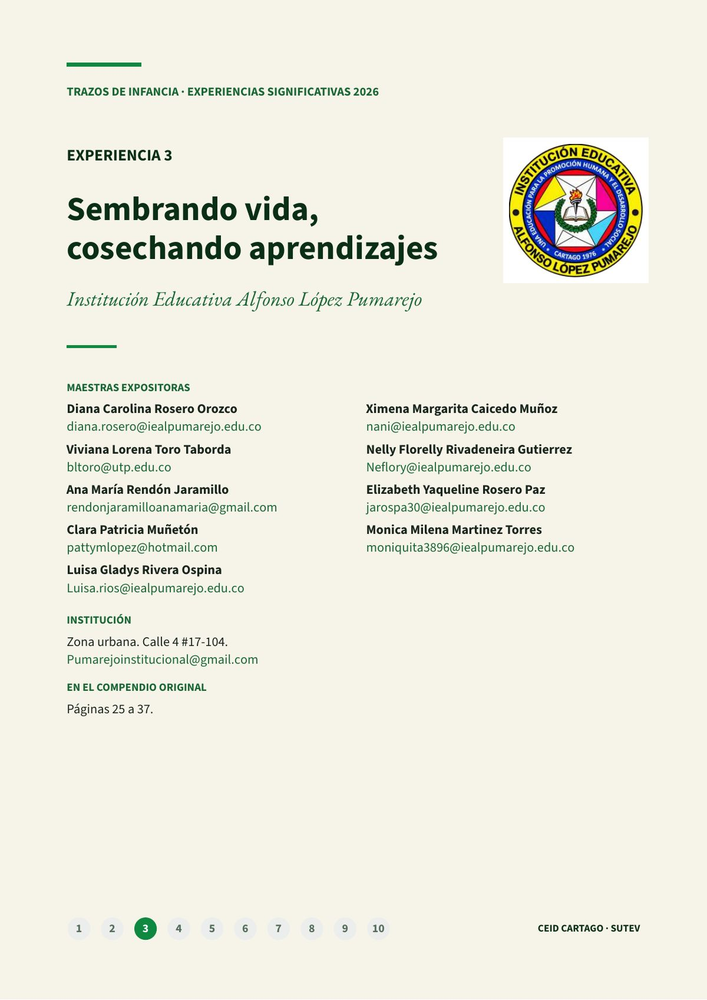
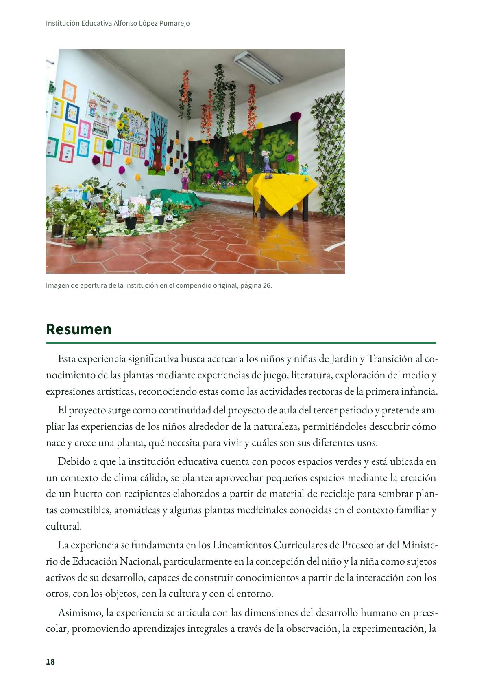
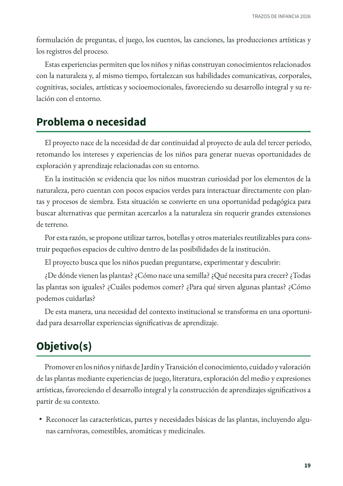
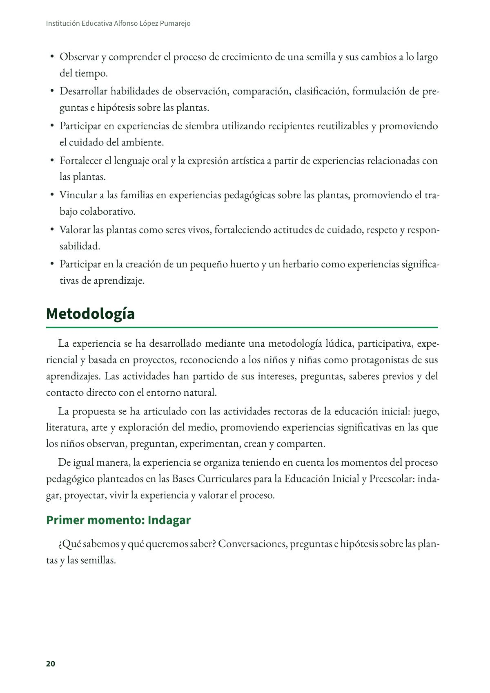
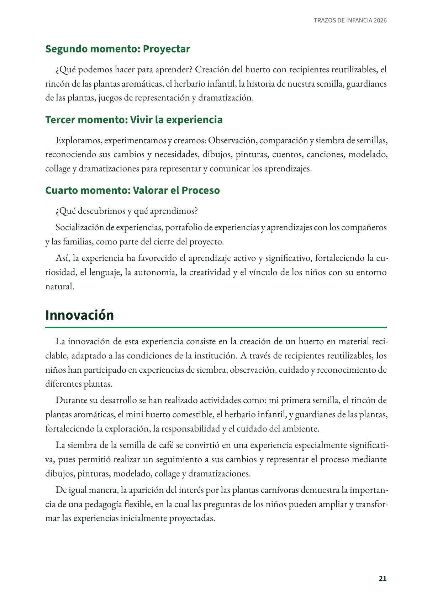
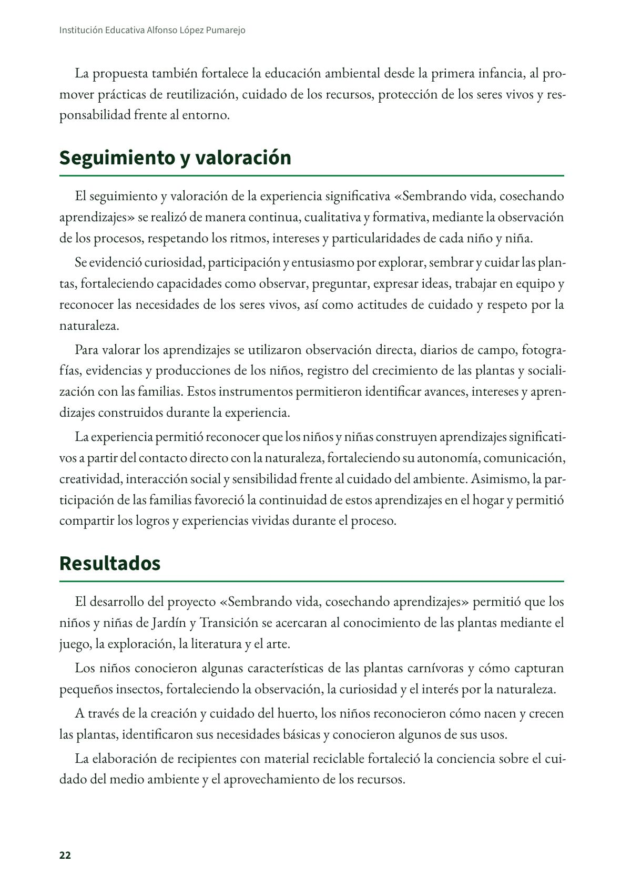
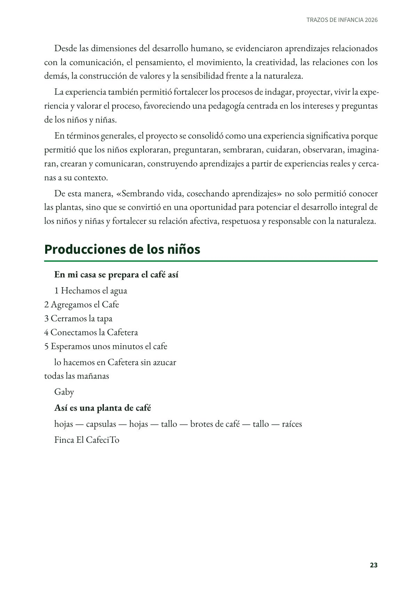
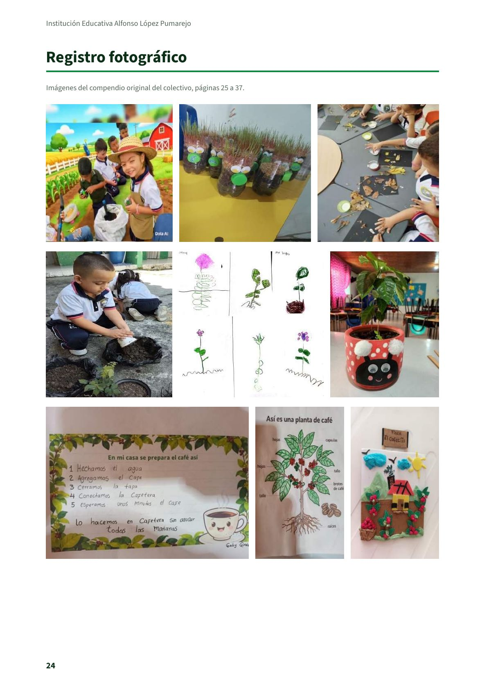
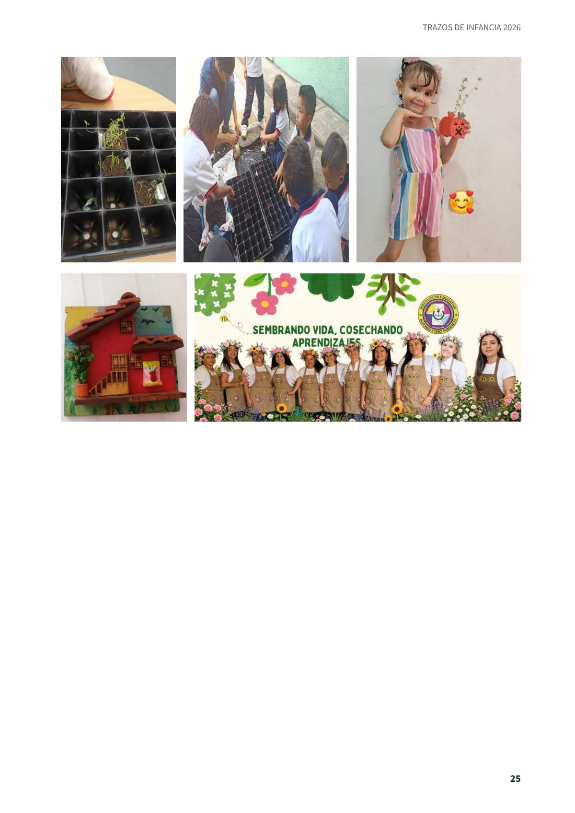

Sembrando vida, cosechando aprendizajes
Experiencia significativa en educación inicial de la Institución Educativa Alfonso López Pumarejo, de Cartago, tal como la presentaron sus maestras en el compendio del colectivo Trazos de Infancia.
PDF · 9 págs. · 477 KBResumen
Esta experiencia significativa busca acercar a los niños y niñas de Jardín y Transición al conocimiento de las plantas mediante experiencias de juego, literatura, exploración del medio y expresiones artísticas, reconociendo estas como las actividades rectoras de la primera infancia.
El proyecto surge como continuidad del proyecto de aula del tercer periodo y pretende ampliar las experiencias de los niños alrededor de la naturaleza, permitiéndoles descubrir cómo nace y crece una planta, qué necesita para vivir y cuáles son sus diferentes usos.
Debido a que la institución educativa cuenta con pocos espacios verdes y está ubicada en un contexto de clima cálido, se plantea aprovechar pequeños espacios mediante la creación de un huerto con recipientes elaborados a partir de material de reciclaje para sembrar plantas comestibles, aromáticas y algunas plantas medicinales conocidas en el contexto familiar y cultural.
La experiencia se fundamenta en los Lineamientos Curriculares de Preescolar del Ministerio de Educación Nacional, particularmente en la concepción del niño y la niña como sujetos activos de su desarrollo, capaces de construir conocimientos a partir de la interacción con los otros, con los objetos, con la cultura y con el entorno.
Asimismo, la experiencia se articula con las dimensiones del desarrollo humano en preescolar, promoviendo aprendizajes integrales a través de la observación, la experimentación, la formulación de preguntas, el juego, los cuentos, las canciones, las producciones artísticas y los registros del proceso.
Estas experiencias permiten que los niños y niñas construyan conocimientos relacionados con la naturaleza y, al mismo tiempo, fortalezcan sus habilidades comunicativas, corporales, cognitivas, sociales, artísticas y socioemocionales, favoreciendo su desarrollo integral y su relación con el entorno.
Problema o necesidad
El proyecto nace de la necesidad de dar continuidad al proyecto de aula del tercer periodo, retomando los intereses y experiencias de los niños para generar nuevas oportunidades de exploración y aprendizaje relacionadas con su entorno.
En la institución se evidencia que los niños muestran curiosidad por los elementos de la naturaleza, pero cuentan con pocos espacios verdes para interactuar directamente con plantas y procesos de siembra. Esta situación se convierte en una oportunidad pedagógica para buscar alternativas que permitan acercarlos a la naturaleza sin requerir grandes extensiones de terreno.
Por esta razón, se propone utilizar tarros, botellas y otros materiales reutilizables para construir pequeños espacios de cultivo dentro de las posibilidades de la institución.
El proyecto busca que los niños puedan preguntarse, experimentar y descubrir:
¿De dónde vienen las plantas? ¿Cómo nace una semilla? ¿Qué necesita para crecer? ¿Todas las plantas son iguales? ¿Cuáles podemos comer? ¿Para qué sirven algunas plantas? ¿Cómo podemos cuidarlas?
De esta manera, una necesidad del contexto institucional se transforma en una oportunidad para desarrollar experiencias significativas de aprendizaje.
Objetivo(s)
Promover en los niños y niñas de Jardín y Transición el conocimiento, cuidado y valoración de las plantas mediante experiencias de juego, literatura, exploración del medio y expresiones artísticas, favoreciendo el desarrollo integral y la construcción de aprendizajes significativos a partir de su contexto.
- Reconocer las características, partes y necesidades básicas de las plantas, incluyendo algunas carnívoras, comestibles, aromáticas y medicinales.
- Observar y comprender el proceso de crecimiento de una semilla y sus cambios a lo largo del tiempo.
- Desarrollar habilidades de observación, comparación, clasificación, formulación de preguntas e hipótesis sobre las plantas.
- Participar en experiencias de siembra utilizando recipientes reutilizables y promoviendo el cuidado del ambiente.
- Fortalecer el lenguaje oral y la expresión artística a partir de experiencias relacionadas con las plantas.
- Vincular a las familias en experiencias pedagógicas sobre las plantas, promoviendo el trabajo colaborativo.
- Valorar las plantas como seres vivos, fortaleciendo actitudes de cuidado, respeto y responsabilidad.
- Participar en la creación de un pequeño huerto y un herbario como experiencias significativas de aprendizaje.
Metodología
La experiencia se ha desarrollado mediante una metodología lúdica, participativa, experiencial y basada en proyectos, reconociendo a los niños y niñas como protagonistas de sus aprendizajes. Las actividades han partido de sus intereses, preguntas, saberes previos y del contacto directo con el entorno natural.
La propuesta se ha articulado con las actividades rectoras de la educación inicial: juego, literatura, arte y exploración del medio, promoviendo experiencias significativas en las que los niños observan, preguntan, experimentan, crean y comparten.
De igual manera, la experiencia se organiza teniendo en cuenta los momentos del proceso pedagógico planteados en las Bases Curriculares para la Educación Inicial y Preescolar: indagar, proyectar, vivir la experiencia y valorar el proceso.
Primer momento: Indagar
¿Qué sabemos y qué queremos saber? Conversaciones, preguntas e hipótesis sobre las plantas y las semillas.
Segundo momento: Proyectar
¿Qué podemos hacer para aprender? Creación del huerto con recipientes reutilizables, el rincón de las plantas aromáticas, el herbario infantil, la historia de nuestra semilla, guardianes de las plantas, juegos de representación y dramatización.
Tercer momento: Vivir la experiencia
Exploramos, experimentamos y creamos: Observación, comparación y siembra de semillas, reconociendo sus cambios y necesidades, dibujos, pinturas, cuentos, canciones, modelado, collage y dramatizaciones para representar y comunicar los aprendizajes.
Cuarto momento: Valorar el Proceso
¿Qué descubrimos y qué aprendimos?
Socialización de experiencias, portafolio de experiencias y aprendizajes con los compañeros y las familias, como parte del cierre del proyecto.
Así, la experiencia ha favorecido el aprendizaje activo y significativo, fortaleciendo la curiosidad, el lenguaje, la autonomía, la creatividad y el vínculo de los niños con su entorno natural.
Innovación
La innovación de esta experiencia consiste en la creación de un huerto en material reciclable, adaptado a las condiciones de la institución. A través de recipientes reutilizables, los niños han participado en experiencias de siembra, observación, cuidado y reconocimiento de diferentes plantas.
Durante su desarrollo se han realizado actividades como: mi primera semilla, el rincón de plantas aromáticas, el mini huerto comestible, el herbario infantil, y guardianes de las plantas, fortaleciendo la exploración, la responsabilidad y el cuidado del ambiente.
La siembra de la semilla de café se convirtió en una experiencia especialmente significativa, pues permitió realizar un seguimiento a sus cambios y representar el proceso mediante dibujos, pinturas, modelado, collage y dramatizaciones.
De igual manera, la aparición del interés por las plantas carnívoras demuestra la importancia de una pedagogía flexible, en la cual las preguntas de los niños pueden ampliar y transformar las experiencias inicialmente proyectadas.
La propuesta también fortalece la educación ambiental desde la primera infancia, al promover prácticas de reutilización, cuidado de los recursos, protección de los seres vivos y responsabilidad frente al entorno.
Seguimiento y valoración
El seguimiento y valoración de la experiencia significativa «Sembrando vida, cosechando aprendizajes» se realizó de manera continua, cualitativa y formativa, mediante la observación de los procesos, respetando los ritmos, intereses y particularidades de cada niño y niña.
Se evidenció curiosidad, participación y entusiasmo por explorar, sembrar y cuidar las plantas, fortaleciendo capacidades como observar, preguntar, expresar ideas, trabajar en equipo y reconocer las necesidades de los seres vivos, así como actitudes de cuidado y respeto por la naturaleza.
Para valorar los aprendizajes se utilizaron observación directa, diarios de campo, fotografías, evidencias y producciones de los niños, registro del crecimiento de las plantas y socialización con las familias. Estos instrumentos permitieron identificar avances, intereses y aprendizajes construidos durante la experiencia.
La experiencia permitió reconocer que los niños y niñas construyen aprendizajes significativos a partir del contacto directo con la naturaleza, fortaleciendo su autonomía, comunicación, creatividad, interacción social y sensibilidad frente al cuidado del ambiente. Asimismo, la participación de las familias favoreció la continuidad de estos aprendizajes en el hogar y permitió compartir los logros y experiencias vividas durante el proceso.
Resultados
El desarrollo del proyecto «Sembrando vida, cosechando aprendizajes» permitió que los niños y niñas de Jardín y Transición se acercaran al conocimiento de las plantas mediante el juego, la exploración, la literatura y el arte.
Los niños conocieron algunas características de las plantas carnívoras y cómo capturan pequeños insectos, fortaleciendo la observación, la curiosidad y el interés por la naturaleza.
A través de la creación y cuidado del huerto, los niños reconocieron cómo nacen y crecen las plantas, identificaron sus necesidades básicas y conocieron algunos de sus usos.
La elaboración de recipientes con material reciclable fortaleció la conciencia sobre el cuidado del medio ambiente y el aprovechamiento de los recursos.
Desde las dimensiones del desarrollo humano, se evidenciaron aprendizajes relacionados con la comunicación, el pensamiento, el movimiento, la creatividad, las relaciones con los demás, la construcción de valores y la sensibilidad frente a la naturaleza.
La experiencia también permitió fortalecer los procesos de indagar, proyectar, vivir la experiencia y valorar el proceso, favoreciendo una pedagogía centrada en los intereses y preguntas de los niños y niñas.
En términos generales, el proyecto se consolidó como una experiencia significativa porque permitió que los niños exploraran, preguntaran, sembraran, cuidaran, observaran, imaginaran, crearan y comunicaran, construyendo aprendizajes a partir de experiencias reales y cercanas a su contexto.
De esta manera, «Sembrando vida, cosechando aprendizajes» no solo permitió conocer las plantas, sino que se convirtió en una oportunidad para potenciar el desarrollo integral de los niños y niñas y fortalecer su relación afectiva, respetuosa y responsable con la naturaleza.
Producciones de los niños
En mi casa se prepara el café así
1 Hechamos el agua
2 Agregamos el Cafe
3 Cerramos la tapa
4 Conectamos la Cafetera
5 Esperamos unos minutos el cafe
lo hacemos en Cafetera sin azucar
todas las mañanas
Gaby
Así es una planta de café
hojas — capsulas — hojas — tallo — brotes de café — tallo — raíces
Finca El CafeciTo
Maestras e institución
- Diana Carolina Rosero Orozco: diana.rosero@iealpumarejo.edu.co
- Viviana Lorena Toro Taborda: bltoro@utp.edu.co
- Ana María Rendón Jaramillo: rendonjaramilloanamaria@gmail.com
- Clara Patricia Muñetón: pattymlopez@hotmail.com
- Luisa Gladys Rivera Ospina: Luisa.rios@iealpumarejo.edu.co
- Ximena Margarita Caicedo Muñoz: nani@iealpumarejo.edu.co
- Nelly Florelly Rivadeneira Gutierrez: Neflory@iealpumarejo.edu.co
- Elizabeth Yaqueline Rosero Paz: jarospa30@iealpumarejo.edu.co
- Monica Milena Martinez Torres: moniquita3896@iealpumarejo.edu.co
- Institución: Institución Educativa Alfonso López Pumarejo, zona urbana, Calle 4 #17-104. Pumarejoinstitucional@gmail.com
Así se ve en el libro
9 páginas







